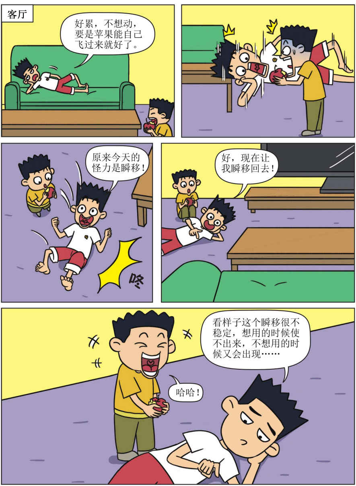
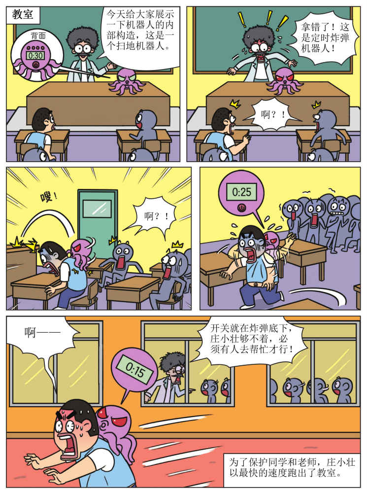
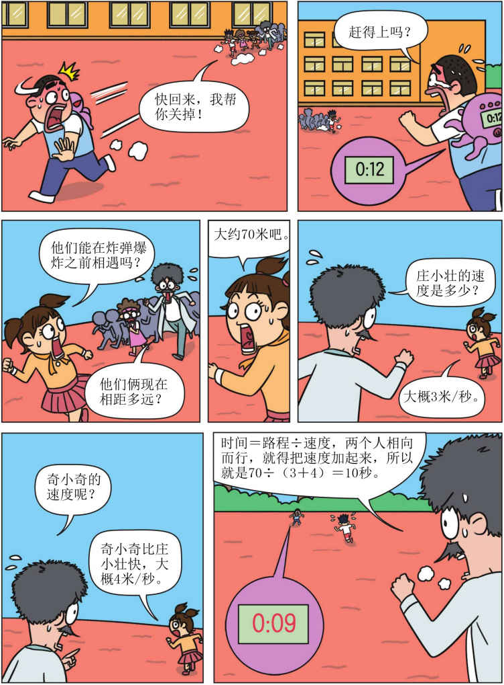
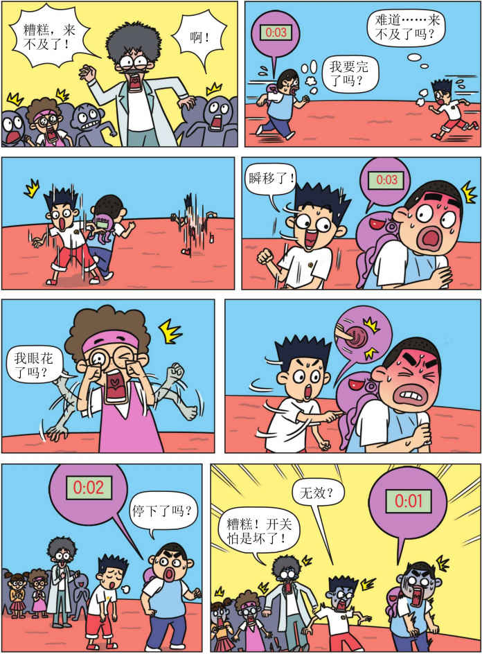
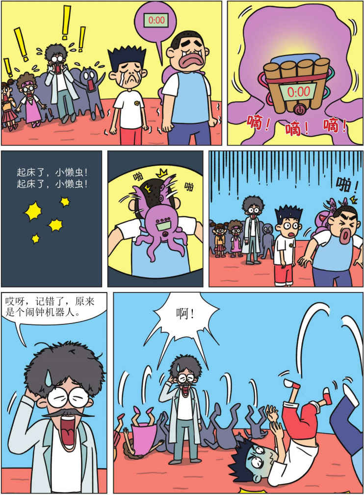
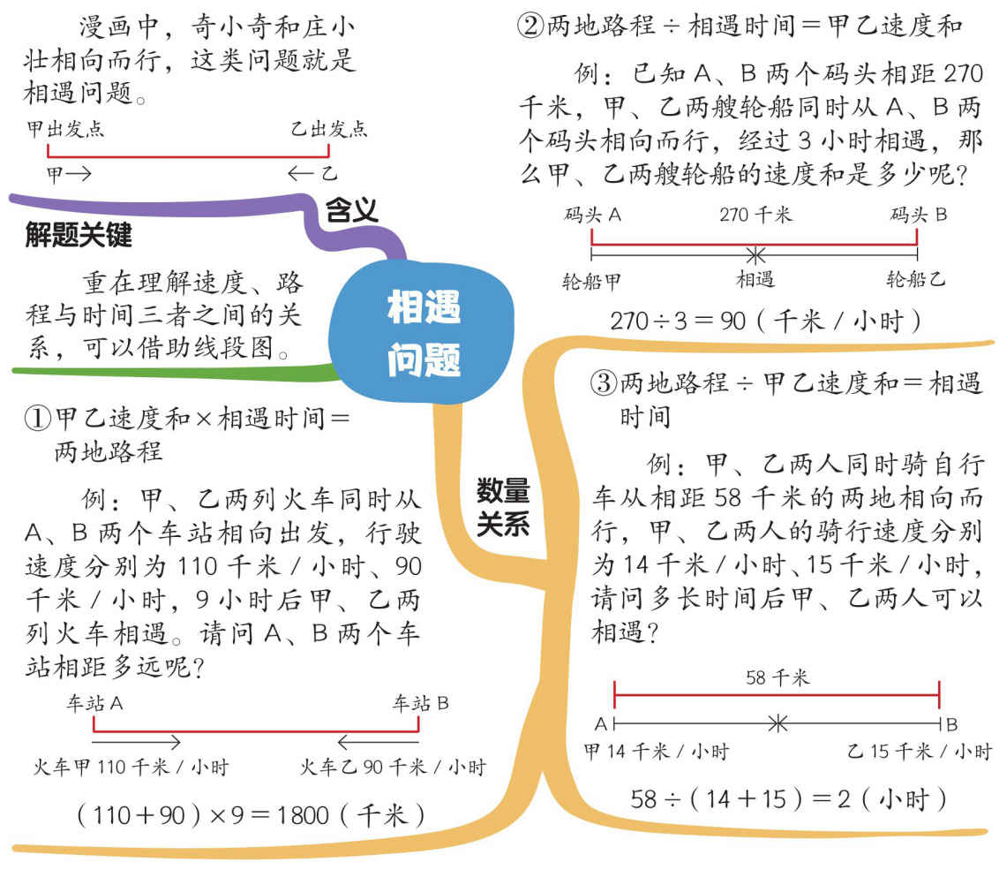

相遇问题

数学练一练
答案在第19页，一定要先做完，再看答案哦！
丁丁和灵灵分别从相距60千米的A、B两地同时出发，骑自行车相向而行，5小时后相遇。已知丁丁每小时骑4千米，则灵灵每小时骑多少千米呢？
答案：假设30个头全是兔，则脚的数量为30×4=120（只）。实际上脚有88只，比假设少：120-88=32（只）。一只鸡比一只兔少2只脚，总计少了32只脚，则鸡的数量：32÷2=16（只）。兔的数量：30-16=14（只）。
第37页的答案在这里哦！